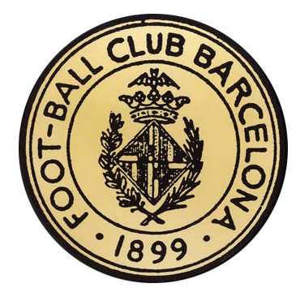
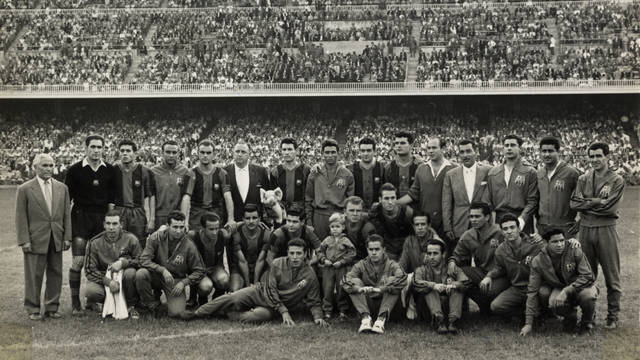
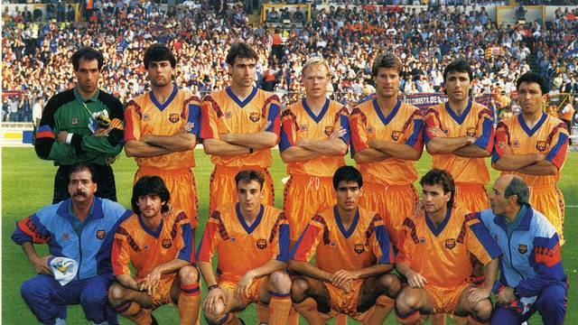

 Футболен клуб Барселона води началото си от датата 22 октомври 1899 г., когато Жоан Гампер – един от футболистите-пионери в континентална Европа – публикува обява за организиране на футболни мачове в списанието “Лос Депортес”. На 29 ноември същата година клубът е официално създаден от Гампер и още 11 отзовали се на обявата съоснователи. За първи президент на клуба е избран англичанинът Гуалтери Уайлд и още в първия си мач новосфмормираният клуб облича любимия синьо-червен екип, запазил се до ден днешен. През 1902 г. отборът печели първия от мнoгoбройните си трофеи – Копа Макая (футболното първенство на Каталуня), както и достига финал при първото си участие в турнира за Купата на Краля. През същата година Барселона побеждава с 3-1 Реал Мадрид в първото официално Ел Класико. Между 1908 и 1925 г. начело на клуба е основателят му Жоан Гампер, като под неговото ръководство отборът изживява златна ера (11 шампионатни титли на Каталуня, шест Купи на Краля и четири Купи на Пиринеите). Клубът вече надвишава 20 000 члена и се стаблизира финансово – дотолкова, че да финансира сам нов стадион “Лес Кортс”, на който се премества през 1922 г. Първият шампионат на Испания е завоюван в сезон 1928-1929 г. – само 2 години след като клубът става официално професионален. По същото време клубът се утвърждава като обединителен символ на Каталуня и каталунците в борбата им с диктатурата на генерал Примо де Ривера (а по-късно и с тази на Франко).
Четиридесетте години на 20 век са драматични за клуба. През 1943 г. Барселона губи от Реал Мадрид в полуфинал за Купата на Генералисимус Франко след намесата на директора на сигурността на Франко, който напомня на играчите на Барса, че имат възможността да играят единствено и само заради “щедростта на режима”. Въпреки тежката политическа ситуация, в която е поставен, клубът печели няколко важни трофея в края на периода, включително Копа Латина – трофея предшественик на Купата на европейските шампиони – през 1949 г. след победа срещу Спортин Лисабон с 2-1. Веднъж вече обединил каталунците в борбата им с диктатурата на Примо де Ривера, през четиридесетте години клубът отново играе водеща роля в съпротивата срещу режима на Франко. Стадионът на Барса “Лес Кортс” е едно от малкото места в Испания, където има свобода на словото, включително на използването на каталунски език, а самият клуб се превръща в най-ефективния посланник на Каталуня пред света. Съвсем логично, години след това тази роля на клуба е синтезирана от тогавашния президент на Барса Нарсис де Карера в думите “повече от клуб” (на каталунски: més que un club).
 През юни 1950 г. клубът успява да привлече Ласло Кубала – нападател от словашко-унгарски произход, който се превръща в голямата звезда на отбора. В първия си официален сезон с клуба (1951-52) Кубала вкарва цели 26 гола в 19 мача. В един от тези мачове Кубала поставя немислим рекорд, който никoй не е успял да задмине – нападателят вкарва 7 гола при победата с 9-0 срещу Спортинг Хихон. Между 1951 и 1953 г. Барса печели практически всички възможни трофеи. Завинаги в историята на отбора остава сезон 1951-52 г. или така наречения “Сезон на петте купи”, в който Барса отнася вкъщи Ла Лига, Купата на Краля, Копа Латина, както и купите Ева Дуарте и Мартини Роси. Клубът става известен със своето магическо нападение в състав Басора, Сесар, Вила, Кубала и Манчо. Членската маса на Барса достига 38 000 души, като през 1953 г. са проведени първите избори за президент на клуба от членовете му (socios) – една удивително демократична процедура за времето си. Стремителното израстване на клуба налага проектиране и на нов по-голям стадион. Така през септември 1957 г. e официално открит домът на Барса Камп Ноу – най-големият стадион в Европа със своя актуален капацитет от 99,354 места.
На новия си стадион отборът печели две последователни титли на Испания през 1959 и 1960 година, както и става двукратен носител на предшественика на Купата на УЕФА и Лига Европа – Купата на панаирните градове (през 1958 и 1960 г.) През тези успешни години начело на отбора е геният Еленио Ерера, а в клуба играят редица легенди на световния футбол. Сред тях са двама от поколението на вълшебните маджари – Шандор Кочиш и Золтан Цибор, рекордьорът по голове в един мач за бразилския национален отбор Еваристо, както и най-добрият футболист на Европа за 1960 г. Луис Суарес. През 1966 г. е завоювана още една Купа на панаирните градове и така Барса се превръща в клуба с най-много трофеи в съществуването на този турнир.
За Барса седемдесетте години се помнят с две големи събития. Първото е пристигането на Йохан Кройф в отбора през 1973 г. Холандският нападател става бързо идол на феновете на Барса и символ на тоталния футбол. С екипа на клуба Кройф печели Златната топка през 1974 г., а също така вкарва своя най-известен гол, който испанските медии наричат “невъзможен”, а авторът му “магьосник” и “летящият холандец” (видео: http://www.youtube.com/watch?v=5IVYTytz1r8). С брилянтния Кройф в нападение отборът постига една от най-паметните победи над Реал Мадрид на собствения му стадион (5-0), като това второ велико събитие за клуба е изработено на датата 17 февруари 1974 г.
С края на диктатурата на Франко отборът и целият спортен живот на Иберийския полуостров изживяват ренесанс. През 1978 г. е избран нов президент на Барса – Хосеп Луис Нуньес, който се превръща и в най-дълго служилия ръководител на клуба (до 2000 г.). През 1979 г. отборът печели първата си Купа на носителите на национални купи в Бaзел, като събитието е запомнено с изключителната подкрепа от страна на феновете на отбора. Цели 30 000 пропътуват разстоянието до Швейцaрия за да видят европейския триумф на отбора. Оргомната маса от привърженици на отбора се потвърждава и от броя членове на клуба (socios), който минава котата 100 000 през осемдесетте години. През същото десетилетие в клуба играят мнозина от звездите на световния футбол като Бернд Шустер, Гари Линекер и великата “десетка” Диего Марадона. Особено емоционален е шампионатът на Испания спечелен през 1985 г., когато един от най-добрите вратари в историята на отбора Франсиско Урути спасява решаваща дузпа в последните минути на мача с Валядолид. Радостта от титлата през 1985 г. е голяма, но след нея клубът преживява трудни моменти до края на десетилетието.
 Една от най-важните години за клуба е 1988 – годината, когато президентът Нуньес решава да се довери на каталунеца по дух и легенда на Барса Йохан Кройф, който поема треньорския пост на отбора. От тази година започва ерата известна като Dream Team – период, в който отборът доминира тотално в Испания и изумява Европа с уникалния си стил на игра. Клубът печели рекорден брой титли на Испания поред – цели четири между 1991 и 1994 г. Периодът е особено специален за българите, тъй като незаменима част от звездната Бaрса е Христо Стоичков, който се превръща в любимец на феновете и донася още една Златна топка за футболист на клуба (1994 г.). В отбора играе съзвездие от най-добрите испански и световни футбоилсити за времето си като Хосеп Гуардиола, Хосе Мари Бакеро, Чики Бегиристайн, Михаел Лаудруп, Роналд Куман, както и разбира се неповторимият Ромарио. Гениалният бразилски нападател поставя рекорд за най-много хеттрика в един сезон (5), един от които при фамозното 5-0 срещу Реал Мадрид през сезон 1993/1994 г. (видео: http://www.youtube.com/watch?v=WhsB8qgp1tI&feature=related ). Над всичко в тази славна за отбора епоха стои нощта на 20 май 1992 г. На тази дата в един от храмовете на световния футбол – Уембли – Барселона побеждава Сампдоря с 1-0 и печели първата Купа на европейските шампиони в историята си. Голът на радостта е дело на Роналд Куман, който изпълнява своя марков пряк свободен удар и донася най-сетне така заслужената купа в Каталуня. (видео: http://www.youtube.com/watch?v=7YaqOibFjog).